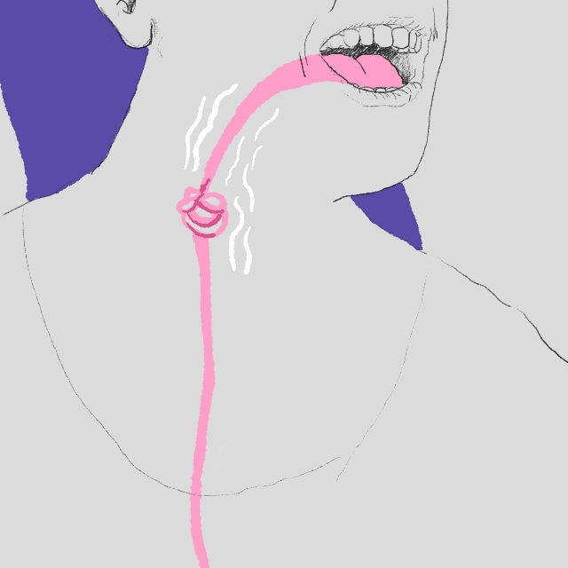

Warum Frauen ihre Stimmen besser kennenlernen sollten
In unangenehmen Situationen sprechen Frauen oft in hoher Tonlage – und werden deshalb weniger ernstgenommen. Es ist das Ergebnis veralteter Stereotype. Was man dagegen tun kann.
Von Ronja Ebeling

Illustration: FDE
Er tobte, schrie ausdauernd in den Telefonhörer, wurde sogar richtig ausfallend. Ich hatte den Geschäftspartner bisher nicht persönlich getroffen, aber in meiner Vorstellung war er mindestens zwei Meter groß. „Was für eine Kindergartenveranstaltung“, wetterte er und stellte sich mit diesem Vergleich klar über mich, eine junge Frau. Ich hörte nur meine zaghaften Versuche, in einer ungewollt hohen Stimmlage gegen ihn anzureden. Erfolglos. Am Ende des Telefonats war ich nicht nur erschöpft vom Luftanhalten, sondern auch verärgert über seinen unprofessionellen Ton. Was mich aber wirklich wütend machte: Ich hatte im Gespräch meine Stimme und damit auch meine Haltung verloren. Spätestens seit dieser Erfahrung weiß ich, wie wichtig es ist, sich mit der eigenen Stimme zu beschäftigen und sie kontrollieren zu können. Aber wie gelingt das? Und warum scheint es Frauen überhaupt schwerer zu fallen als Männern, ihre Stimme für sich einzusetzen?
Es liegt an der menschlichen Anatomie, dass Männer in den meisten Fällen eine tiefere, lautere Stimme haben. Dass das oft ein Vorteil ist, liegt dagegen an veralteten Rollenbildern und sozialen Stereotypen. Ihnen ist es zum Beispiel zu verdanken, dass Frauen in Männern mit tiefen Stimmen eher vertrauenswürdige politische Führungspersönlichkeiten sehen, sie also mit Souveränität und Durchsetzungsvermögen verbinden. Eine andere Studie konnte zeigen, dass männliche CEOs mit tieferen Stimmen größere Firmen leiten und mehr Geld verdienen. Auch für Männer kann es also von Nachteil sein, eine hohe Stimme zu haben – doch sie haben dieses Problem deutlich seltener.
Margaret Thatcher beispielsweise war sich der Macht einer tiefen Stimme bewusst. Die ehemalige Premierministerin des Vereinigten Königreichs unterzog sich einem intensiven Sprechtraining und senkte ihre Tonlage um eine halbe Oktave. Vielleicht aus deshalb nannte man sie bald nicht mehr verniedlichend „Maggie“ sondern „Eiserne Lady“.
Aber müssen sich nun alle Frauen eine tiefere Stimme aneignen, um im Beruf ernst genommen zu werden? „Nein, aber sie sollten ihre eigene Stimme kennen und sie als Kommunikationsmittel betrachten“, sagt Logopädin und Sprechtrainerin Birte Heckmann. Denn es passiere häufig, dass Frauen vor Aufregung oder aus Reflex mit einer unnatürlich hohen Stimme sprechen, die eigentlich nicht die eigene ist. Stimme, Haltung und Atmung hingen dabei mit gesellschaftlichen Einflüssen zusammen.
Frauenstimmen sind in Skandinavien besonders tief – möglicherweise, weil die Gleichberechtigung dort weit fortgeschritten ist
Vor 20 Jahren lagen Frauenstimmen im Schnitt nämlich noch eine ganze Oktave über den Männerstimmen. Mittlerweile beträgt der Unterschied nur noch eine Quinte, also etwa die Hälfte des ursprünglichen Wertes, wie eine Studie der Universität Leipzig belegt. Die Forscher*innen sehen das als einen Nebeneffekt der Emanzipation. So haben sie zum Beispiel auch festgestellt, dass Frauenstimmen im skandinavischen Raum besonders tief sind – möglicherweise, weil die Gleichberechtigung dort weit fortgeschritten ist.
„Bei den Einflüssen auf unsere Stimme handelt es sich um Stereotype, die oft schon im Kindesalter anerzogen werden“, erklärt die Expertin. Mädchen wird von klein auf eher beigebracht, andere ausreden zu lassen und natürlich immer zu lächeln. Die Yale Universität hat mehr als 100 Studien analysiert und festgestellt, dass Frauen tendenziell häufiger lächeln. Im Jugendalter seien die Unterschiede besonders deutlich. Birte Heckmann erklärt, dass ein Lächeln durch das Anspannen bestimmter Gesichtsmuskeln den Kehlkopf in die Höhe rutschen lässt – und somit auch den Stimmklang.
Aber nicht nur dieser Teil der geschlechtsbezogenen Erziehung wird uns stimmlich zum Verhängnis. Während Jungs eher wie ein nasser Sack auf dem Stuhl hängen dürfen, werden Mädchen schneller dazu ermahnt, aufrecht zu sitzen. Auch Hobbys wie Reiten und Tanzen, die Mädchen nach wie vor häufiger ausüben, zielen auf eine aufrechte Haltung ab. Später bringen uns weitere gesellschaftliche Ideale dazu, stets den Bauch einzuziehen und die Brust aufzurichten. Von Mädchen wird eine andere Körperhaltung erwartet als von gleichaltrigen Jungs, was zu einer Verkrampfung führen und sich auf die Atmung auswirken kann. Untersuchungen belegen, dass bei Frauen die flache Brustatmung präsenter ist, während Männer eher tief in den Bauch atmen. Es ist, als steckten wir noch immer im Korsett. Frauen nehmen oft nicht mal beim Atmen den Raum ein, der ihnen zusteht.
„Wenn wir in die Bauchatmung gehen, wirkt unsere Stimme viel stärker und resonanzreicher“
Diese körperliche Anspannung führt manchmal zu einem unbeabsichtigt hohen Ton und beeinflusst auch den Gesprächspartner. Birte Heckmann demonstriert das: Sie verfällt selbst in die Brustatmung und in eine sehr hohe Stimme, die ich als ihr Gegenüber – zugegeben – als unangenehm wahrnehme. Aber warum empfinde ich das so? „Das hat etwas mit Spiegelneuronen zu tun: Wenn ich in einer sehr hohen Stimme spreche, erzwinge ich, dass es eng um meinen Kehlkopf wird. Ihre eigene Atmung verändert sich dadurch und Sie fühlen sich selbst eingeengt“, erklärt die Logopädin das Phänomen, dass Menschen unbewusst auf des Verhalten ihres Gegenübers reagieren. „Wenn wir aber in die Bauchatmung gehen, wirkt unsere Stimme viel stärker und resonanzreicher. Dadurch fühlen nicht nur wir uns bestärkt, sondern auch unser Gesprächspartner“, sagt sie. Die Bauchatmung unterstütze unsere stimmliche Überzeugungskraft und vermittle Souveränität.
Wenn die Stimme doch mal in die Höhe rutscht, rät Birte Heckmann zum bewussten Ausatmen und einem fragenden „Mhm“-Laut, um zu prüfen, ob man sich in seiner natürlichen Tonlage befindet. Ich lege die Hand auf mein Dekolleté, atme langsam aus und wiederhole den Laut in verschiedenen Tonhöhen. Bei einem recht tiefen Ton spüre ich eine Vibration unter meiner Hand. „Die Vibration zeigt, dass Sie sich ihrer natürlichen Tonlage nähern“, sagt Birte Heckmann. Wenn ich beim nächsten Telefonat also merke, dass meine Stimme vor Aufregung abhebt, kann ich ruhig ausatmen und ein vibrierendes „Mhm“ von mir geben. Für die Stimme ist das wie ein Runterkommen, eine Art Erdung.
Birte Heckmann betont: „Frauen müssen sich keine tiefere Stimme aneignen, um ernst genommen zu werden. Aber sie sollten ihre eigene Stimme und natürliche Tonhöhe kennen und wissen, sie flexibel einzusetzen.“ So könne je nach Situation eine entsprechende Tonlage gewählt werden: ein emotionaler und empathischer Ton, wenn wir merken, dass es jemandem im Kollegium nicht gut geht, aber eben auch eine gewisse Resonanz und Stärke, wenn wir unseren Standpunkt vertreten. Denn wer weiß, wie die eigene Stimme funktioniert und was sie bewirken kann, lässt sie sich nicht so leicht nehmen.


Jetzt diskutieren: